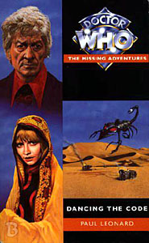

|
Dancing the Code
|
BASIC PLOT DOCTOR COMPANIONS MATERIALISATION CIRCUIT Pg 69 Inside the Doctor's laboratory, UNIT HQ. PREPARATORY READING CONTINUITY REFERENCES "If anything like the Nestenes of Axons came again" Spearhead from Space/Terror of the Autons, The Claws of Axos. Pg 22 "If he put some kind of phone in the TARDIS - or some way of leaving a message -" This is a reference to the space/time telegraph the Doctor eventually leaves for the Brigadier, seen in Revenge of the Cybermen and Terror of the Zygons. Pg 26 "The projection is based on a formula given to me by a friend of mine on Venus, many years ago." Venusian Lullaby. Pg 55 "But Benton only grinned. 'Rank Hath Its Privileges, sir.'" Reference to Day of the Daleks, although Mike says "Has" there. Pg 56 "She tried to tell herself that being arrested on Earth, even in a strange country, was hardly likely to be as dangerous as Spiridon under the Daleks, or Solos." Planet of the Daleks, The Mutants. Pg 60 "'The cybermen?' hazarded Catriona. 'Oh no. They were Daleks. Well, Daleks and Ogrons. You see there was this alternative future, and the Doctor -" Day of the Daleks. Catriona's knowledge of the Cybermen is from The Invasion. Pg 61 "Well first there were the Nestenes, and their plastic things, the Autons. Then there were the Axons, the Daemons, Ogrons, Daleks, Methaji, Arcturians, Sea Devils, Ice Warriors, Draconians, Hoveet, Skraals, Solonians - and -umm - Kalekani and Venusians, though I've never really met the Venusians but the Doctor talks about them all the time - and then if you count things like the Drashigs - oh and the Spiridons of course, that was only last week, except that you can't see them because they're invisible -" In order: Terror of the Autons, The Claws of Axos, The Daemons, Day of the Daleks, an unrecorded adventure, The Curse of Peladon, The Sea Devils, The Curse of Peladon again, Frontier in Space, two unrecorded adventures, The Mutants, an unrecorded adventure, the Doctor met Venusians in Venusian Lullaby, Planet of the Daleks. This is a worthy attempt to expand the gaps a little, although Jo doesn't mention Verdigris or the Careshi (Verdigris and The Suns of Caresh, respectively), for obvious reasons. Tellingly, however, she also doesn't mention alien races we do know about, such as Alpha Centaurans, the Peladonians, Aggedor, the Uxarians, the Keller machine etc. We can put her various omissions down to the sheer length of the list, but it's quite a clever piece on Paul Leonard's part. Pg 74 "These were people, people, not Autons or Daleks or Ogrons." Terror of the Autons, Day of the Daleks. Pg 79 "I did over seventy thousand hours on a Martian Exploder a couple of centuries ago." This might be on the Mars-Jupiter run, for which the Doctor is a qualified pilot, as mentioned in Robot. Pg 134 "Despite its apparently crude construction, the mound was larger and more impressive than, for example, the Axon spaceship - and that had caused enough trouble." The Claws of Axos. Pg 184 "The Venusians, I seem to remember, had a system of hand-signals which many of their cultures used almost exclusively for intimate conversation. The clan Dhallenidhall in particular thought it was quite rude to speak aloud. Except in an emergency, of course. And then there are the Delphons, who communicate by means of eyebrow movements." Venusians were seen in Venusian Lullaby and Delphons were first mentioned in Spearhead from Space. Pg 190 "Famous novelist, six and six" Graham Greene, later to appear in The Turing Test, also by Paul Leonard. Pg 254 "Her eyes only showed a blurry view of an amber surface, rather like the Probe 9 pictures of Mars." The Ambassadors of Death. Pg 273 Reference to Sontarans. OLD FRIENDS AND OLD ENEMIES NEW FRIENDS AND NEW ENEMIES A Xarax turns up briefly on page 17 of The Dark Path, in one the greatest continuity cock-ups of all-time.
CONTINUITY COCK-UPS PLUGGING THE HOLES [Fan-wank theorizing of how to fix continuity cock-ups] FEATURED ALIEN RACES Pg 143 Defenders, tank-like insects with armoured bodies, stumpy legs and forward-sloping heads. Pg 250 Spider-like weaver units. Pg 273 A being that looks like a huge hexagonal nut. It's black and shiny and attached to cables, with a tiny shuttered eye and a slightly larger pair of jaws at the top of each section. FEATURED LOCATIONS Pg 20 UNIT HQ and surroundings. Pg 265 The USS Eisenhower. Various transport planes and helicopters, including some which are Xarax imitations. IN SUMMARY - Robert Smith? |
|
 |